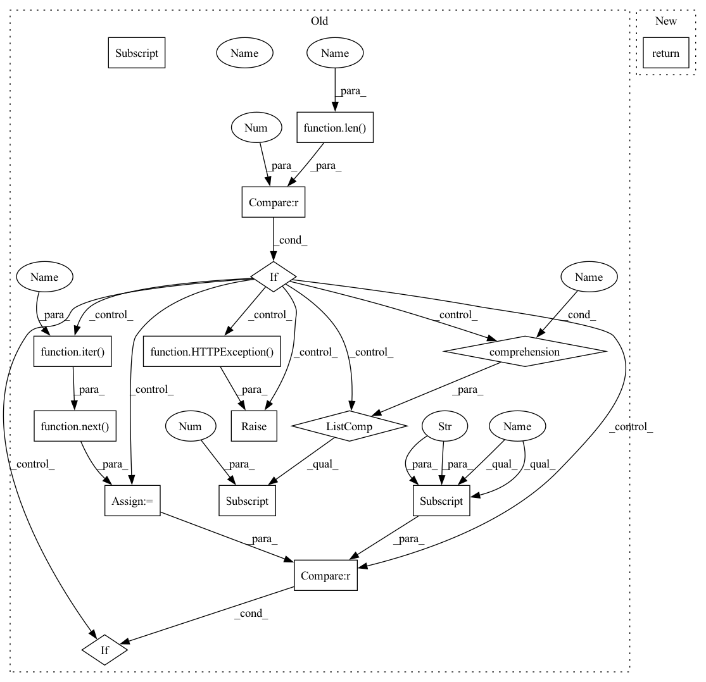

Pattern ID :27538
Before Change
batch_tasks = tasks("batch_infer")
if check_if_running:
if len(batch_process) == 0 :
raise HTTPException(status_code=404, detail="No Batch Inference Tasks are currently Running")
task_id = next(iter(batch_process ) )
return [task for task in batch_tasks if task["id"] == task_id][0]
task = batch_tasks[-1] if len(batch_tasks) else None
if task is None:
raise HTTPException(status_code=404, detail="No Batch Inference Tasks Found")After Change
@router.get("/infer", summary="Get Status of Batch Inference Task")
async def status(all: bool = False, check_if_running: bool = False):
return BackgroundTask.status("batch_infer", all, check_if_running)
@router.post("/infer/{model}", summary="Run Batch Inference Task")In pattern: SUPERPATTERN
Frequency: 3
Non-data size: 16
Instances Fragment ID: 81837713
Project Name: project-monai/monailabel
Commit Name: bb8980aba160af9ee9ebd3a13fe62cdc2377b0cf
Time: 2021-05-31
Author: sachidanand.alle@gmail.com
File Name: monailabel/endpoints/batch_infer.py
M Class Name: AnonimousClass
N Class Name: AnonimousClass
M Method Name: status(2)
N Method Name: status(2)
M Parent Class:
N Parent Class:
M File Name: monailabel/endpoints/batch_infer.py
N File Name: monailabel/endpoints/batch_infer.py
M Start Line: 37
M End Line: 50
N Start Line: 19
N End Line: 19
Before Change
@router.delete("/", summary="Stop Training Task")
async def stop_train():
if len(train_process) == 0 :
raise HTTPException(status_code=404, detail=f"No Training Tasks are currently Running")
task_id = next(iter( train_process) )
process = train_process[task_id]
process.kill()
train_process.pop(task_id, None)
task = [task for task in train_tasks if task["id"] == task_id][0]
task["status"] = "STOPPED"
task["end_ts"] = datetime.today().strftime("%Y-%m-%d %H:%M:%S")
return task
After Change
@router.delete("/", summary="Stop Training Task")
async def stop_train():
return stop_background_task("train")
Fragment ID: 81837714
Project Name: project-monai/monailabel
Commit Name: 47aad7c5f1262548294a995978417f6214803eea
Time: 2021-04-30
Author: salle@nvidia.com
File Name: monailabel/endpoints/train.py
M Class Name: AnonimousClass
N Class Name: AnonimousClass
M Method Name: stop_train(0)
N Method Name: stop_train(0)
M Parent Class:
N Parent Class:
M File Name: monailabel/endpoints/train.py
N File Name: monailabel/endpoints/train.py
M Start Line: 121
M End Line: 132
N Start Line: 55
N End Line: 55
Before Change
@router.get("/", summary="Get Status of Training Task")
async def status(all: bool = False, check_if_running: bool = False):
train_process = processes("train")
train_tasks = tasks("train")
if check_if_running:
if len(train_process) == 0 :
raise HTTPException(status_code=404, detail="No Training Tasks are currently Running")
task_id = next(iter( train_process) )
return [task for task in train_tasks if task["id"] == task_id][0]
task = train_tasks[-1] if len(train_tasks) else None
if task is None:
raise HTTPException(status_code=404, detail="No Training Tasks Found")After Change
@router.get("/", summary="Get Status of Training Task")
async def status(all: bool = False, check_if_running: bool = False):
return BackgroundTask.status("train", all, check_if_running)
@router.post("/", summary="Run Training Task") Fragment ID: 81837715
Project Name: project-monai/monailabel
Commit Name: bb8980aba160af9ee9ebd3a13fe62cdc2377b0cf
Time: 2021-05-31
Author: sachidanand.alle@gmail.com
File Name: monailabel/endpoints/train.py
M Class Name: AnonimousClass
N Class Name: AnonimousClass
M Method Name: status(2)
N Method Name: status(2)
M Parent Class:
N Parent Class:
M File Name: monailabel/endpoints/train.py
N File Name: monailabel/endpoints/train.py
M Start Line: 37
M End Line: 50
N Start Line: 19
N End Line: 19